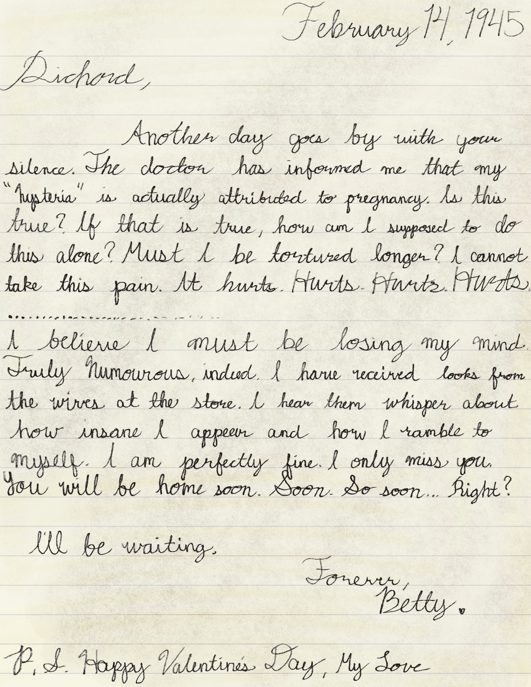

February 14, 1945
Richard,
Another day goes by with your silence. The doctor has informed me that my "hysteria" is actually attributed to pregnancy. Is this true? If that is true, how am I supposed to do this alone? Must I be tortured longer? I cannot take this pain. It hurts. Hurts. Hurts. Hurts.
......................................
I believe I must be losing my mind. Truly humorous, indeed. I have received looks from the wives at the store. I hear them whisper about how insane I appear and how I ramble to myself. I am perfectly fine. I only miss you. You will be home soon. Soon. So soon... Right?
I'll be waiting.
Forever,
Betty
P.S. Happy Valentine's Day, My Love.
Recreation of a symmetrical face showing anger and frustration found behind the letter, made with colored ink, reminiscent of an ink blot used in psychological tests.